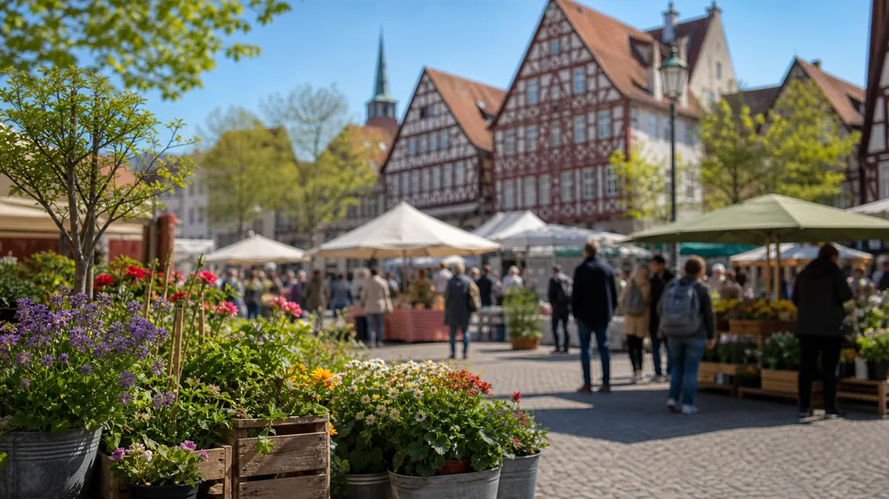

Tagesarchiv
53 regionale Meldungen
Alle Karten öffnen die jeweilige Originalmeldung.

Hessen Aktuell
Regionale Meldungen dieses Tages, gesammelt aus den aktiven Quellen und nach Stadt sowie Thema lesbar.
Tagesarchiv
Alle Karten öffnen die jeweilige Originalmeldung.
Meldungen

Kassel · Verkehr
Hier kommen die Hinweise auf einige neue Baustellen Anfang Oktober. Auf der Zielgeraden befindet sich das Projekt Fahrradstraße Königstor.

Kassel · Veranstaltungen
Zwei Lesungen, zwei Klavierabende und das Familienkonzert „Nordische Lieder und Märchen“ des Kammerchors Con Brio bietet das Programm im Kulturhaus Palais Bellevue in der Schönen Aussicht 2 in der ersten Woche der Herbstferien.

Kassel · Politik
Startschuss für den neuen Trendsportpark: Die Stadt Kassel baut ein modernes Freizeitangebot für Jugendliche und Sportbegeisterte an der Schützenstraße 61. Die Fertigstellung ist für Juli 2027 geplant.

Kassel · Politik
Gemeinschaftsausstellung von Maryam Andaz und Wolfgang Roll ab dem 6. Oktober im Kreishaus Weitere Details, Hintergründe und vollständige Angaben stehen in der verlinkten Originalmeldung.

Kassel · Sicherheit
Projekt „Clever fürs Klima“ fördert Klimaschutz und nachhaltiges Handeln an 73 Schulen Weitere Details, Hintergründe und vollständige Angaben stehen in der verlinkten Originalmeldung.

Kassel · Politik
Aktionstag in den Kreiskliniken setzt Händedesinfektion in den Fokus Weitere Details, Hintergründe und vollständige Angaben stehen in der verlinkten Originalmeldung.

Kassel · Politik
Kassel · Politik

Kassel · Polizei
Am 16.09.2026 gab es die nordhessische Premiere zum Format „Musik trifft Prävention“ in Bad Arolsen. Knapp 300 Bürgerinnen und Bürger waren der Einladung der Stadt Bad Arolsen gefolgt.

Kassel · Polizei
Großer Andrang, viele tolle Gespräche und starkes Interesse an den verschiedenen Berufen der Einsatzkräfte: Darauf kann die Blaulichtfamilie nach der Veranstaltung in Kassel zurückblicken.

Kassel · Polizei
Die Kasseler Polizei und die Staatsanwaltschaft Kassel ermitteln aktuell in drei mutmaßlichen Erpressungsfällen, bei denen eine Tätergruppe von verschiedenen Geschäftsinhabern Geldsummen forderten.

Kassel · Polizei
Im Rahmen der Aktion "Blitz for Kids" hat die nordhessische Polizei zusammen mit Schülerinnen und Schülern Geschwindigkeitskontrollen im Umfeld von Schulen und Kitas durchgeführt.
Kassel · Polizei
Unter dem Motto "Blitz für Kids" führte der Verkehrsdienst aus Korbach zusammen mit 10 Schülerinnen und Schülern aus Bad Wildungen am vergangenen Donnerstagvormittag Geschwindigkeitskontrollen durch.

Frankfurt · Verkehr
Frankfurt (ots) - (di) Seit Samstagmorgen (03. Oktober 2026) circa 03:50 Uhr wird die 81-jährige Monika W. aus Frankfurt/ Gutleutviertel vermisst. Letztmalig wurde Monika W. im Johanna-Kirchner-Altenhilfezentrum in der Gutleutstraße in Frankfurt ...
Frankfurt · Polizei
Frankfurt (ots) - (di) Bei einem mutmaßlichen Betäubungsmittelhändler klickten gestern Abend (02. Oktober 2026) in Sachsenhausen die Handschellen, nachdem bei ihm eine nicht geringe Menge Drogen aufgefunden worden war. Bei einer Personenkontrolle ...
Frankfurt · Polizei
Frankfurt (ots) - (di) Gestern Nacht (02. auf 03. Oktober 2026) fielen im Frankfurter Süden gleich mehrere Personen durch ihre Fahrweise mit E-Scootern auf. In einem Fall kam es zu einem Unfall, bei dem eine Person leichte Verletzungen davontrug. ...
Frankfurt · Polizei
Frankfurt (ots) - (di) Im Verlauf des gestrigen Tages (02. Oktober 2026) kam es in Eckenheim und Preungesheim zu zwei Straftaten, bei denen es unbekannte Täter auf hochwertige Goldketten abgesehen hatten. Die Kriminalpolizei hat die Ermittlungen ...
Frankfurt · Polizei
Frankfurt (ots) - (ma) Am Donnerstagnachmittag (1. Oktober 2026) kam es zu einem größeren Einsatz in einem Hotel am Flughafen. Nach aktuellen Erkenntnissen hätten sich gegen 16:45 Uhr mehrere Mitarbeiter des Hotels in einer Umkleide im ...

Frankfurt · Verkehr
Aufgrund von Gleis- und Weichenbauarbeiten fahren die Straßenbahnlinien 12, 15, 17, 18 und 21 auf geänderten Routen. Weitere Details, Hintergründe und vollständige Angaben stehen in der verlinkten Originalmeldung.

Frankfurt · Verkehr
Busse als Ersatz nach Fechenheim wegen Gleisbauarbeiten Weitere Details, Hintergründe und vollständige Angaben stehen in der verlinkten Originalmeldung.
Frankfurt · Verkehr
Aufgrund von Bauarbeiten kann die U7 am Samstag und Sonntag 3. und 4. Oktober, nicht nach Enkheim fahren. Enkheim und der Riederwald bleiben dennoch gut angebunden.
Frankfurt · Verkehr
U-Bahnen halten im Oktober nicht an der Station. Weitere Details, Hintergründe und vollständige Angaben stehen in der verlinkten Originalmeldung.
Frankfurt · Verkehr
Familienfest, historische Bahnen und eine Live-Schaltung zur Tram-EM: Mit mehreren tausend Gästen feierte die VGF am Samstag ihr 30-jähriges Bestehen.
Frankfurt · Wirtschaft
Mainova bestätigt hohe Leistungsfähigkeit Weitere Details, Hintergründe und vollständige Angaben stehen in der verlinkten Originalmeldung.
Frankfurt · Verkehr
Die Preise für Fernwärme im Tarif Wärme Classic steigen turnusgemäß zum 1. Oktober 2026 leicht an. Das wirkt sich je nach Verbrauch und angeschlossener Leistung unterschiedlich aus. Grundlage hierfür sind die vertraglich festgelegten Preisformeln.
Wiesbaden · Verkehr
Am Freitag, 23. Oktober, startet das beliebte Format „Shared Reading“ im Literaturhaus Villa Clementine, Frankfurter Straße 1, in eine neue Runde.
Wiesbaden · Verkehr
Nach der Sommerpause startet die beliebte Leseparty im Literaturhaus Villa Clementine, Frankfurter Straße 1, am Samstag, 24. Oktober, in eine neue Saison.
Wiesbaden · Verkehr
Die Fahrbahn der Rheinstraße wird zwischen der Wilhelmstraße und der Frankfurter Straße saniert. Die Arbeiten finden in drei Bauabschnitten statt.
Wiesbaden · Verkehr
Die Salierstraße wird zwischen dem Gustav-Stresemann-Ring und der Welfenstraße von Freitag, 9. Oktober, bis voraussichtlich Samstag, 17. Oktober, voll gesperrt.
Wiesbaden · Verkehr
Das Tiefbau- und Vermessungsamt plant die Sanierung der Fahrbahndecke im Bereich der Igstadter Straße 33-37 in Bierstadt von Mittwoch, 7. Oktober, bis Montag, 12. Oktober.
Wiesbaden · Polizei
Wiesbaden (ots) - (jul) Die Öffentlichkeitsfahndung nach einer 14-jährigen Jugendlichen aus Wiesbaden von Freitag, 02.10.2026 um 06:21 Uhr wird hiermit zurückgenommen. Die vermisste 14-Jährige konnte wohlbehalten angetroffen werden. Es wird ...
Wiesbaden · Polizei
Wiesbaden (ots) - 1. Pkw entwendet, Wiesbaden-Südost, Schiersteiner Straße, Donnerstag, 01.10.2026, 13:20 Uhr bis 13:50 Uhr (kq)Am Donnerstagmittag entwendeten unbekannte Täter in der Schiersteiner Straße einen Peugeot. Zwischen 13:20 Uhr und ...
Wiesbaden · Verkehr
Wiesbaden (ots) - (vF) Am frühen Donnerstagabend gegen 18:40 Uhr verliert ein Sattelzug aus Offenbach auf der BAB 3 Höhe Niedernhausen bei Starkregen die Kontrolle über sein Gespann,kommt nach rechts von der Fahrbahn ab, durchbricht die ...
Wiesbaden · Polizei
Wiesbaden (ots) - Zwei Fälle von Trickdiebstahl - Bargeld und Schmuck erbeutet, Wiesbaden, Montag, 28.09.2026 bis Mittwoch, 30.09.2026 (kq)In den vergangenen Tagen erbeuteten Trickdiebe in Wiesbaden Bargeld und Schmuck. Am Montagabend zwischen ...
Wiesbaden · Polizei
Wiesbaden (ots) - Rund 600 Mitarbeiterinnen und Mitarbeiter der hessischen Polizei, des Zolls, der Financial Intelligence Unit (FIU), kommunaler Gewerbe- und Ordnungsämter, von Jobcentern, der Steuerfahndung sowie der Familienkasse Hessen sind am ...
Darmstadt · Politik
Die Auszeichnung würdigt die Leistungsfähigkeit und Innovationskraft der drei Rhein-Main-Universitäten. Weitere Details, Hintergründe und vollständige Angaben stehen in der verlinkten Originalmeldung.
Darmstadt · Verkehr
Die Aktion trägt zur Klimaanpassung bei und bringt Darmstadt im bundesweiten „abpflastern“-Wettbewerb auf Platz 1 im Städteranking der Großstädte.
Darmstadt · Politik
Am 2. und 3. November laden die JugendFilmTage „Alltagsdrogen im Visier“ Schulklassen ab der 7. Jahrgangsstufe ins Kinopolis Darmstadt ein.
Darmstadt · Polizei
Darmstadt (ots) - Ein Stromverteilerkasten im Birkenweg geriet in der Zeit zwischen Dienstagmittag (29.9.), 12 Uhr, und Mittwochvormittag (30.9.), 11 Uhr, in das Visier von Kriminellen. Die Täter öffneten gewaltsam den dort aufgestellten ...
Darmstadt · Polizei
Darmstadt (ots) - Nach der Sicherstellung von zwei mutmaßlich gestohlenen Fahrrädern sucht die Polizei jetzt nach den rechtmäßigen Eigentümern. Am Montag (28.9.) konnten Polizeikräfte gegen 17 Uhr im Herrngarten ein dunkelblau-schwarzes E-Bike ...
Darmstadt · Polizei
Darmstadt (ots) - Am Mittwochvormittag (30.9.) wurde der Polizei gegen 11.45 Uhr ein Waldbrand im Bereich der Buckelschneise in Richtung Pfungstadt gemeldet. Die sofort hinzugezogene Feuerwehr leitete umgehend Maßnahmen ein, um das Feuer unter ...
Darmstadt · Polizei
Darmstadt (ots) - Nachdem ein bislang unbekannter Täter am Dienstagabend (29.9.) drei Frauen im Alter zwischen 20 und 46 Jahren mit Pfefferspray besprühte, sucht die Kriminalpolizei nun nach Zeugen. Nach derzeitigem Ermittlungsstand gerieten die ...
Darmstadt · Politik
Darmstadt (ots) - Rund 2.200 Mitarbeiter der Finanzkontrolle Schwarzarbeit des Zolls waren am vergangenen Samstag im gesamten Bundesgebiet unterwegs, um bei einer Schwerpunktmaßnahme Friseur- und Kosmetiksalons zu überprüfen. Auch 48 ...
Hessen · Verkehr
Hessen und Dänemark bauen ihre langjährige Zusammenarbeit im Bereich der Energieversorgung weiter aus. Weitere Details, Hintergründe und vollständige Angaben stehen in der verlinkten Originalmeldung.
Hessen · Politik
Der aktuelle Report des IAB-Betriebspanels 2025 für Hessen zeigt, welches Potenzial in einer besseren Nutzung vorhandener Arbeitskraft liegt.
Hessen · Verkehr
Nach rund zehn Monaten Verhandlungen haben das Unternehmen, der Arbeitgeberverband Hessenmetall und die IG Metall einen Tarifvertrag zur Sicherung des Standorts und der Beschäftigung geschlossen.
Hessen · Verkehr
Hessen begrüßt den Vorschlag des von der Bundesregierung eingesetzten Fachgremiums für eine Standortklausel für die deutsche Pharmaindustrie.
Hessen · Verkehr
4,531 Millionen Euro pro Jahr sollen den besonders von Fluglärm betroffenen Kommunen auch von 2027 bis 2031 zur Verfügung stehen.
Hessen · Politik
Die Allianz der Rhein-Main-Universitäten (RMU) erhält ab dem 1. Januar 2027 den begehrten Exzellenz-Titel. Weitere Details, Hintergründe und vollständige Angaben stehen in der verlinkten Originalmeldung.

Hessen · Veranstaltungen
Sozialministerin Hofmann: „Wir wollen Entwicklungsprozesse und das Engagement von Kita-Trägern und Teams würdigen – und honorieren.“
Hessen · Politik
Ministerpräsident Rhein will bei seiner Reise in die USA die politischen und wirtschaftlichen Beziehungen zu den Vereinigten Staaten weiter stärken.
Hessen · Politik
Digitalministerin Sinemus: „Und die bisherigen Ergebnisse zeigen, dass unser Fahrplan funktioniert.“ Weitere Details, Hintergründe und vollständige Angaben stehen in der verlinkten Originalmeldung.
Hessen · Politik
Ministerpräsident Rhein würdigt die Wiedervereinigung und erinnert an Hessens Geschichte als Grenzland. Weitere Details, Hintergründe und vollständige Angaben stehen in der verlinkten Originalmeldung.